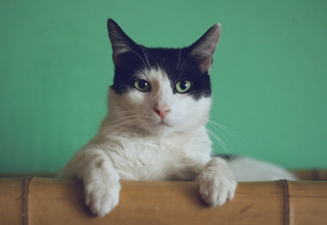
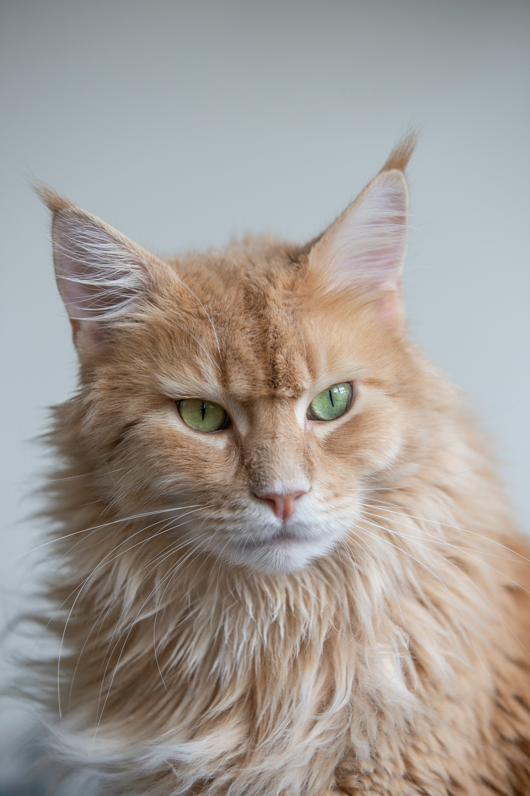

포유류 식육목 고양이과의 대표적인 동물이다.
크게는 가축화한 집고양이와
야생고양이로 나뉜다.
수명은 애완용 고양이 기준으로 평균 14년 정도이고 이와 대조되게, 길거리에서 머무르는 환경과 영양이 나쁜 길고양이들의 수명은 평균 2~3년이 고작이다. 질병이나 사고로 어린 나이에 많이 죽기 때문이다.

고양이는 다른 동물들보다 눈과 동공이 매우 크다. 그리고 세로 동공, 즉 '고양이 눈'은 해가 쨍쨍하게 비치는 밝은 장소로만 한정되며 집 안의 밝기 정도에서 크고 예쁜 눈을 유지한다. 눈꼬리가 위로 향해있어 요염한 느낌을 주기도 한다. 고양이의 두개골에는 포유류 중에서 체구 대비 가장 큰 안와(안구가 들어가는 구멍)가 있다. 눈만 큰 것이 아니라 상당히 조그마한 코, 남녀 불문하고 뿅가죽게 만드는 부위인 발바닥 젤리도 있다. 평균 머리길이 5cm, 그리고 평균 몸길이 60cm라는 비범함은 덤. 무게는 소형은 3kg 미만, 중형은 3~5kg 정도이며, 대형은 5kg 이상이다.
고양이의 뒷발은 발가락이 4개밖에 없다. 따라서 전체 발가락 수는 18개이다.
고양이의 외모는 고양이의 가장 중요한 생존전략이다. 그건 고양이와 인간과의 관계가 편리-공생 생물이기 때문이다.